软件使用说明书（门店版）
目标读者：门店操作员、管理人员（含非技术背景）
文档定位：仅包含“如何使用软件”的操作说明；不包含技术架构、开发、部署等内容。
页眉/页脚：Word 中打开后，将显示页眉（左：APP 图标；右：文档标题）与页脚（左：应用名称；右：页码）。
1. 快速上手
- 打开应用，进入主界面（饮品菜单）。
- 选择饮品 → 在“自定义弹窗”中选择杯型（如：中杯/大杯）和加冰（如：正常冰）→ 确认下单。
- 查看经营数据：进入“统计”页，使用右上“自定义范围”选择时间段，查看图表与汇总。
- 遇到提示（如“重量变化”或错误提示），按弹窗说明操作即可。
提示：建议在网络良好、设备电量充足的情况下操作。当前版本制作过程中不显示进度条；统计页与启动页在加载时会显示圆形进度指示器及提示文本。
图 1-1 用户界面主流程（点单→自定义→制作→交付）

文件名：images/流程图-用户界面-点单-自定义-制作-交付.svg
图 1-2 管理员界面主流程（登录→配方管理→设备维护）

文件名：images/流程图-管理员界面-登录-配方-设备维护.svg
图 1-3 数据统计界面主流程（选择范围→加载→图表与卡片）

文件名：images/流程图-数据统计-范围选择-图表-统计卡片.svg
2. 界面与功能说明
2.1 主界面（饮品菜单）
用途：展示所有可售饮品，进行点单入口。
- 左上角：售罄标志（饮品售罄时出现）。
- 右上角：价格标签；非售罄时，价格下方可能显示“库存低”徽标（不会与“售罄”重叠）。
- 点击某饮品：打开“自定义弹窗”。
图 2-1a 主界面总览
文件名：images/主界面-售罄与库存低.svg（请放置对应截图）
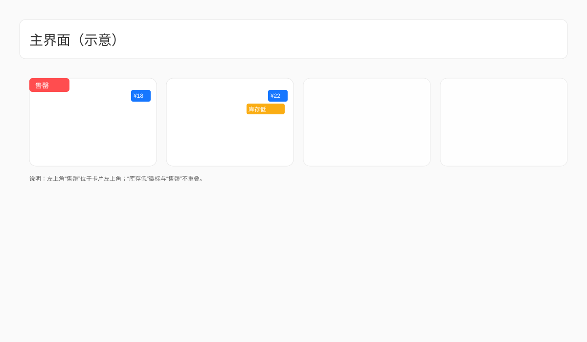
2.2 点单与自定义
用途：选择杯型与其他选项，确认下单。
- 杯型：中杯/大杯。
- 加冰：正常冰/少冰/去冰（以实际界面为准）。
- 确认下单：点击确认按钮。
图 2-2a 选择饮品并打开自定义弹窗
图2 选择饮品的界面 — 文件名：images/选择饮品的界面.svg
文件名：images/选择饮品的界面.svg
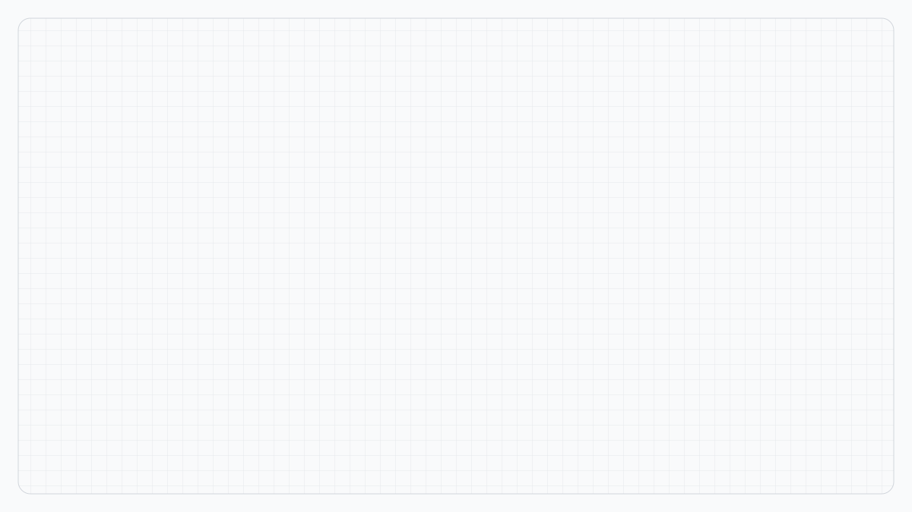
图 2-2b 自定义弹窗：选择中杯与正常冰

图3 自定义弹窗-中杯-正常冰 — 文件名：images/自定义弹窗-中杯-正常冰.svg
文件名：images/自定义弹窗-中杯-正常冰.svg
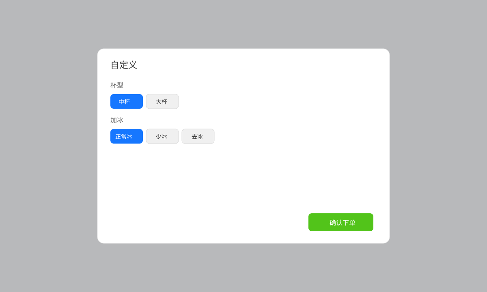
2.3 登录与权限（如流程需要）
用途：登录账号获取相应权限。
- 登录：输入账号/密码或使用既定方式登录。
- 错误提示：根据提示更正输入。
图 2-3 登录弹窗（错误状态示例）
文件名：images/登录弹窗-错误状态.svg
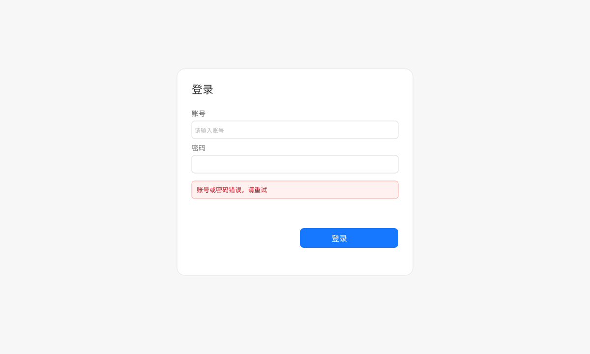
2.4 异常与提示
用途：在异常情况下的处理。
- 重量变化提示：出现“继续/重启”两个选项，请根据实际情况选择；不确定时建议联系管理员。
- 错误提示：出现非致命错误提示时，按提示进行重试或更正输入。
- 轻提示（Toast）：部分状态会以轻提示方式显示（如连接状态），不会打断当前操作。
图 2-4a 重量变化弹窗（继续/重启）
文件名：images/重量变化-继续或重启.svg
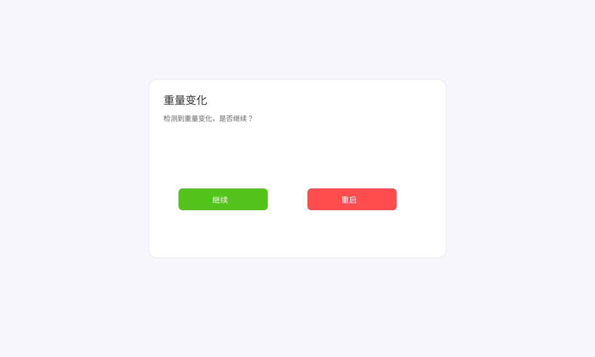
图 2-4b 错误提示对话框
文件名：images/错误提示对话框.svg
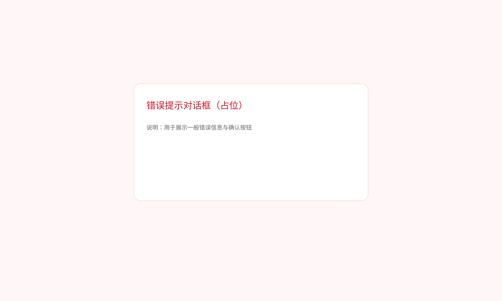
2.5 销售统计
用途：查看营收与销量走势、热门商品、库存等经营数据。加载统计数据时会显示圆形进度指示器及“加载统计数据中...”提示。
2.5.1 日期范围选择
- 点击“自定义范围”打开 Material 3 日期范围选择器。
- 快捷范围：最近7天、最近30天、本周、本月、上月。
- 限制：不允许选择未来日期。
图 2.5.1a 日期范围选择器（展开 + 快捷范围）
文件名：images/日期范围选择器-展开与快捷范围.svg
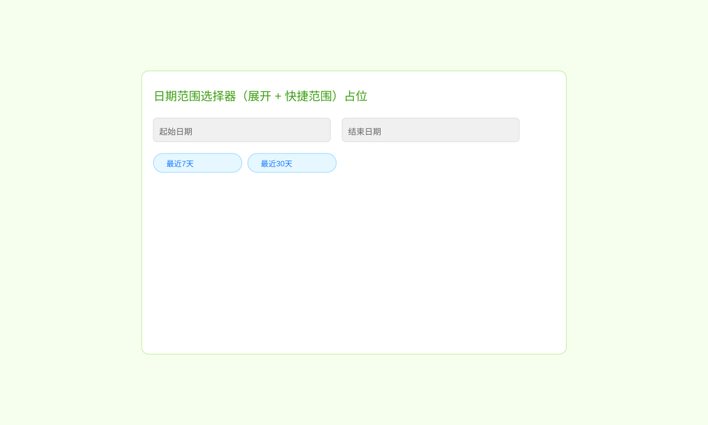
图 2.5.1b 应用范围后标题显示所选范围
文件名：images/已应用日期范围-标题显示.svg
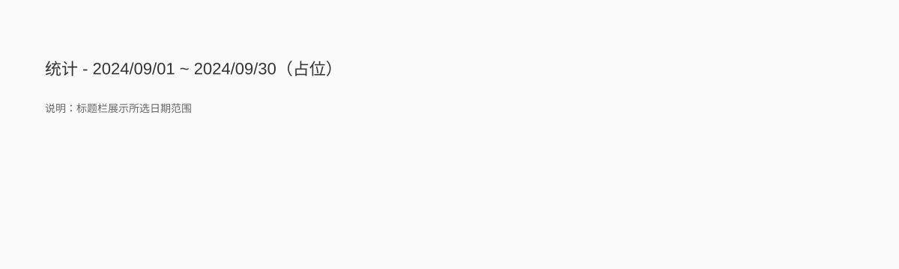
2.5.2 概览卡片
展示：总营收、总订单、今日营收、今日订单等。
图 2.5.2 概览卡片
文件名：images/概览卡片-营收与订单.svg
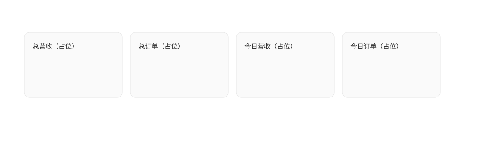
2.5.3 销售趋势折线图
- X 轴为日期（缺失日期已补零以保持连续），Y 轴为数值。
- 支持长按/点击查看 Tooltip；图例可点击显隐特定系列。
图 2.5.3a 销售趋势折线图（正常显示）
文件名：images/销售折线图-正常显示.svg
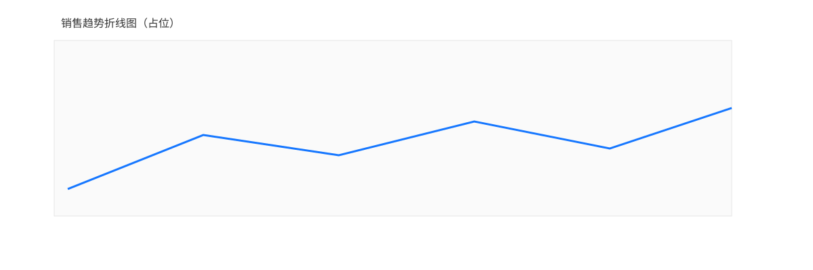
图 2.5.3b 销售趋势折线图（Tooltip 展示）
文件名：images/销售折线图-提示气泡.svg
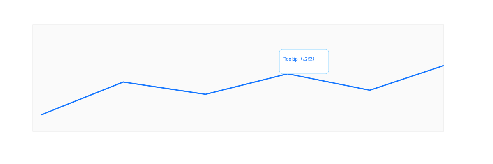
2.5.4 按饮品趋势（总/中杯/大杯）
每个饮品包含三条系列（总、中杯、大杯）；可通过图例点击隐藏/显示。
图 2.5.4a 按饮品趋势（全部系列显示）
文件名：images/饮品趋势-全部系列显示.svg
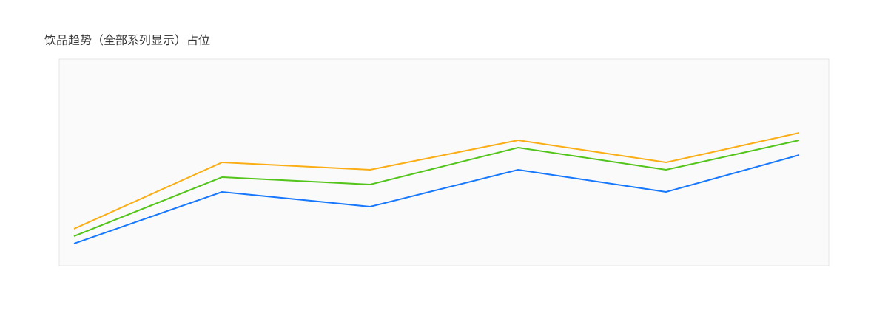
图 2.5.4b 按饮品趋势（隐藏“总”系列后）
文件名：images/饮品趋势-隐藏总系列后.svg
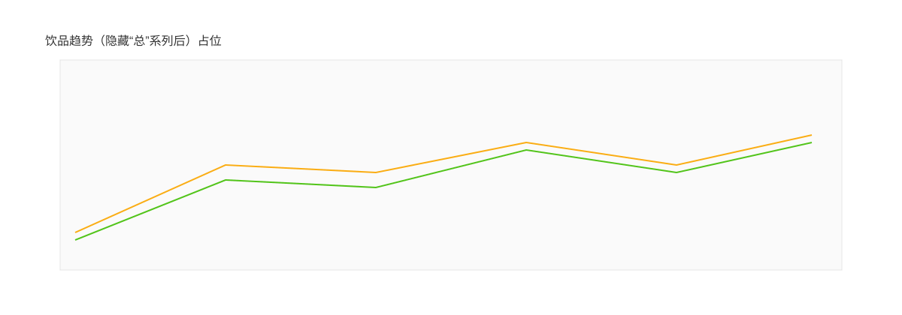
2.5.5 其他统计卡片
热销商品、按杯型统计、库存消耗等模块展示核心数据。
图 2.5.5a 热销商品
文件名：images/热销商品卡片.svg
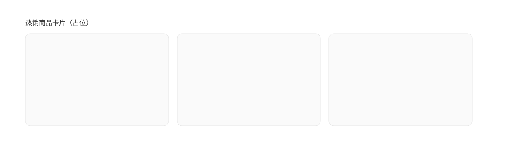
图 2.5.5b 各饮品按杯型统计
文件名：images/按杯型统计卡片.svg
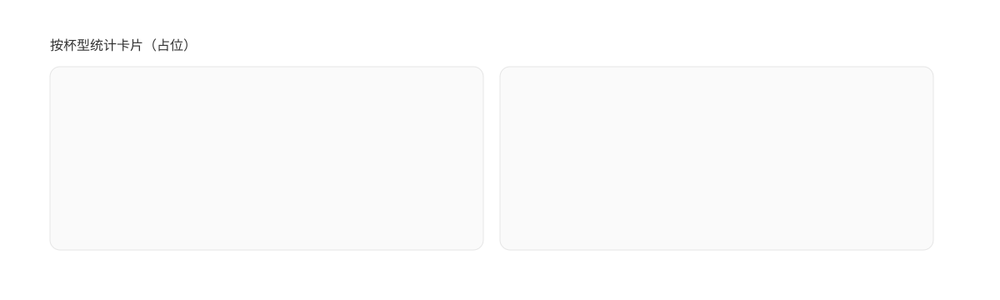
图 2.5.5c 库存消耗统计
文件名：images/库存消耗统计卡片.svg
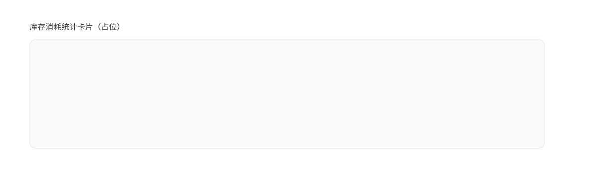
2.5.6 空数据/异常保护
当所选日期范围内没有数据时，界面会安全显示（不崩溃），并提示无数据。
图 2.5.6 空数据示例
文件名：images/空数据示例.svg
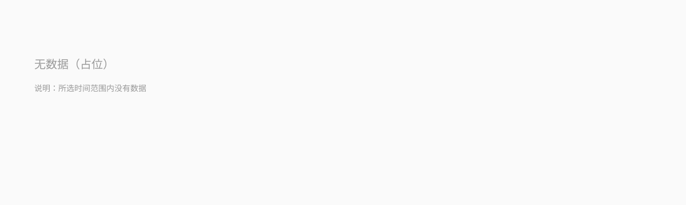
3. 常见问题（FAQ）
- 无数据如何处理？请检查日期范围是否过于狭窄或数据未上报；尝试切换到“最近7天”等快捷范围。
- 提示“重量变化”如何选择？按实际情况选择“继续/重启”；如不确定，建议联系管理员确认。
- 网络异常怎么办？检查 Wi‑Fi/移动网络，稍后重试；问题持续请联系运维支持。
4. 截图与图片放置
- 请将所有截图放入：docs/images/ 目录。
- 命名建议：使用“图编号-界面-核心要素”的规则，中文直白，便于快速识别（示例见各小节）。
- APP 图标文件：docs/images/app-icon.svg（已放置，可后续替换为正式图标）。
在 Word 中打开本 HTML：文件 → 打开 → 选择 docs/usage-manual.html；查看无误后可“另存为” .docx。